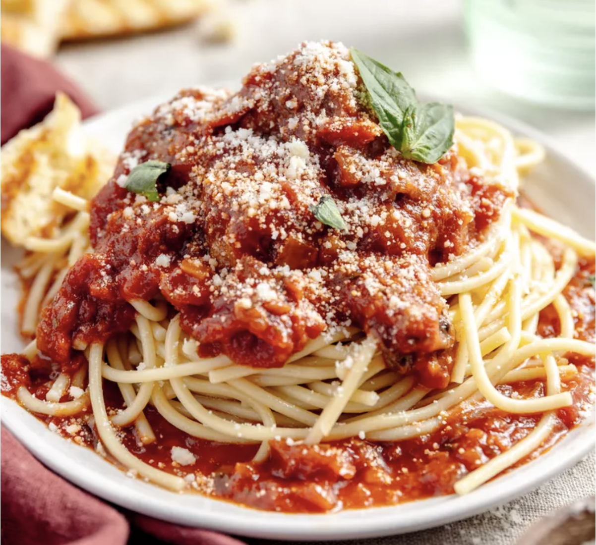

Back

Ingredients
- 1 lb spaghetti
- 2 tbsp olive oil
- 1 onion, chopped
- 2 cloves garlic, minced
- 1 can crushed tomatoes
- 1 tsp sugar
- 1 tsp dried basil
- 1/2 tsp dried oregano
- Salt and pepper to taste
- Grated Parmesan cheese
- Fresh basil leaves for garnish
Instructions
- Cook spaghetti according to package instructions. Drain and set aside.
- In a large skillet, heat olive oil over medium heat. Add onion and garlic, and cook until softened.
- Add crushed tomatoes, sugar, dried basil, and dried oregano. Season with salt and pepper. Simmer for 20 minutes, stirring occasionally.
- Toss the cooked spaghetti with the sauce. Serve with grated Parmesan cheese and fresh basil leaves.